eating walking Spot
Harlow ICE CREAM shop
- 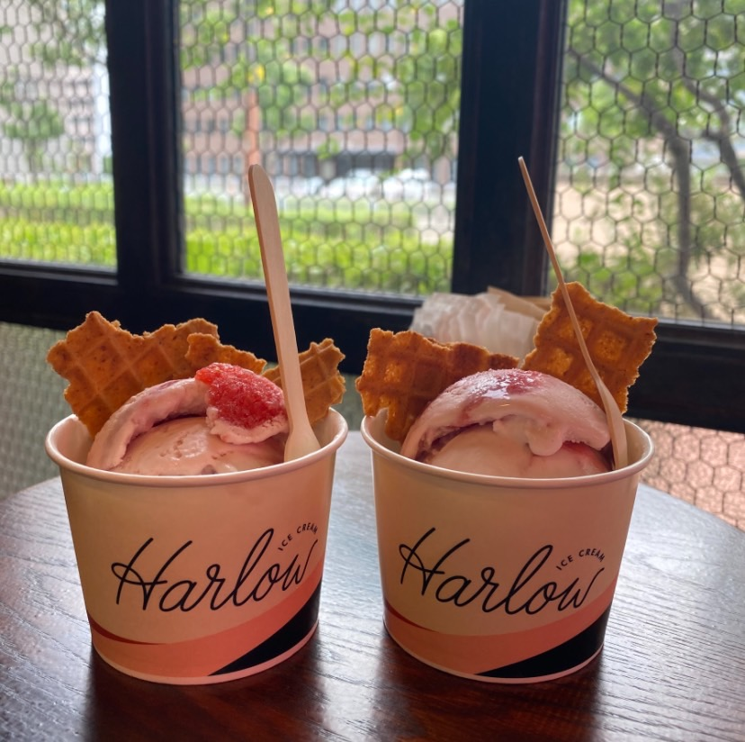
- 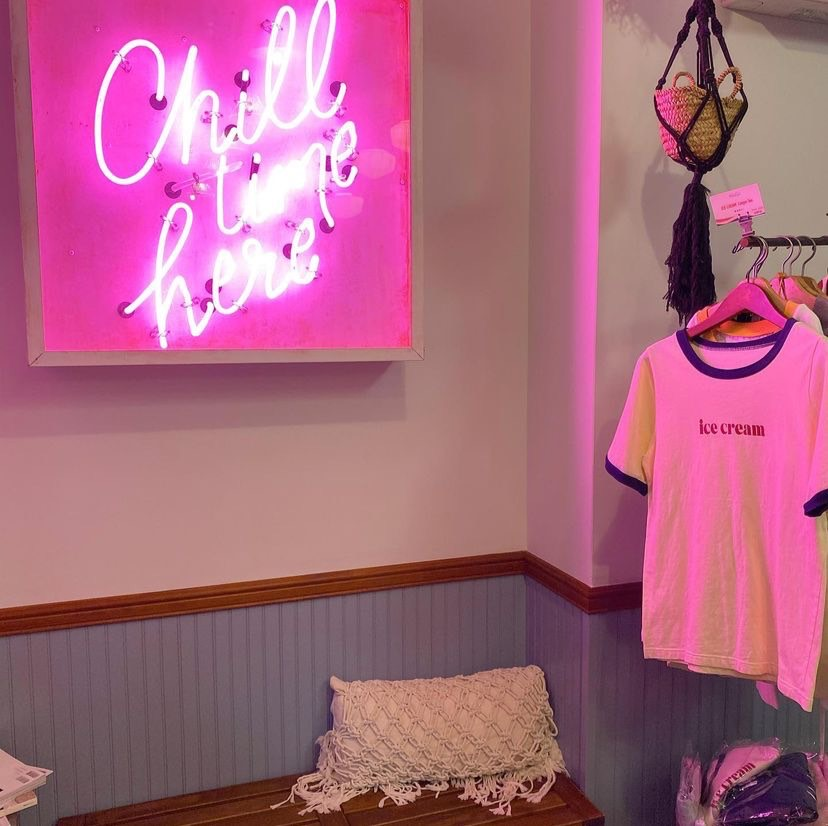
- 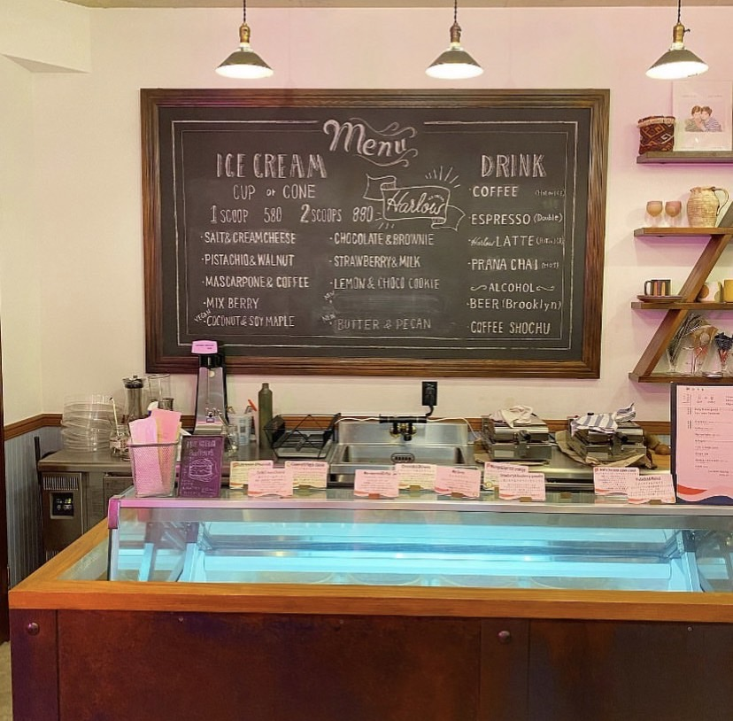
営業時間
12：00~18：00
定休日 火曜、金曜日
Access
神戸市中央区新港町17-3にて
078-585-5388
アイスクリーム好き必見のアイスショップ『ハーロウ アイスクリームショップ』は、
アイスもコーンも全て手作りのオリジナリティ溢れるお店です。
種類も豊富で濃厚なアイスの味が楽しめて食べ歩きにも持ってこいです。
少しお高めですが、味はピカイチ。
公式サイト
YUN.YUN（ユンユン）
- 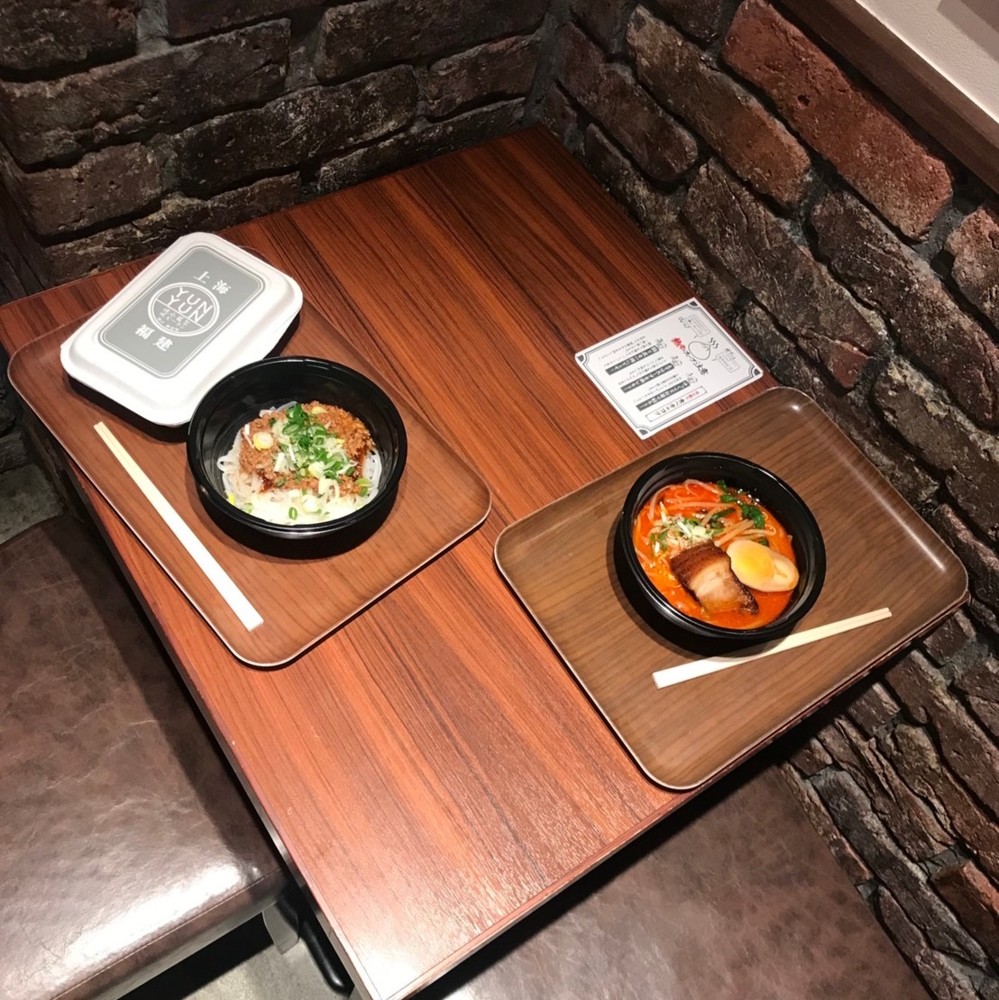
- 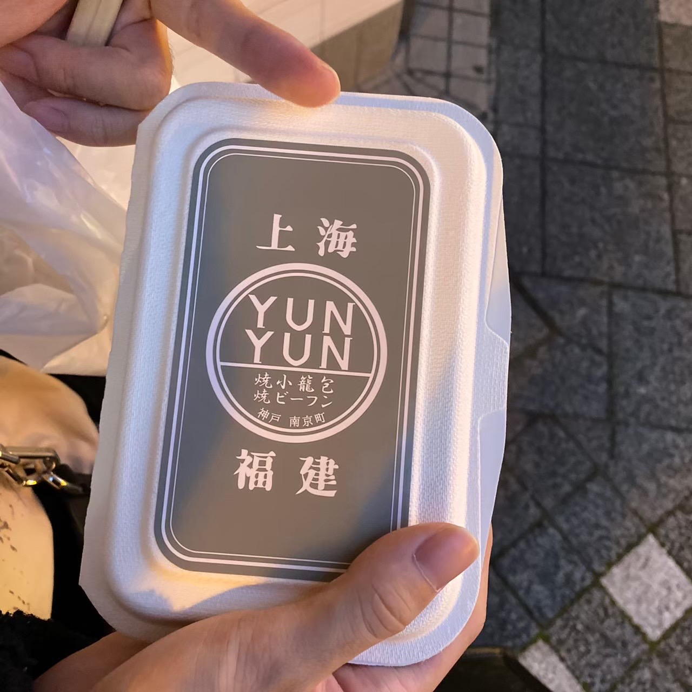
- 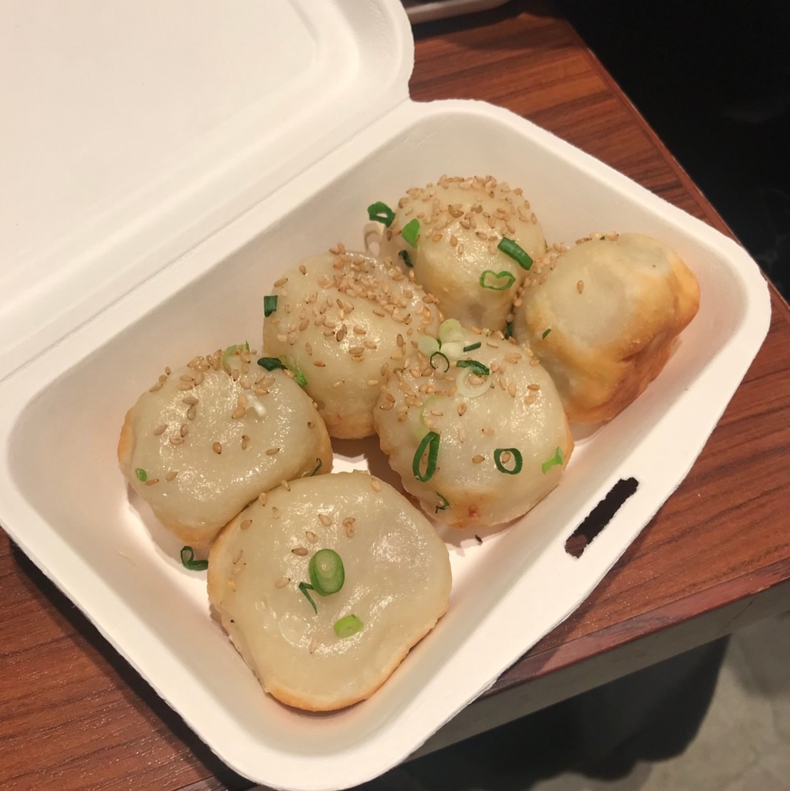
営業時間
11：00~18：00
Access
兵庫県神戸市中央区栄町通
１丁目３−１７にて
078-392-2200
ビーフンと焼き小龍包のお店。いつもずらりと行列を作るほどの人気っぷりで、
丸い形をした本来の小籠包とは珍しい見た目の肉汁たっぷりな小籠包に心踊らされる。
土日は確実に混雑するので平日が狙い目。
公式サイト
Chanomi Stand
- 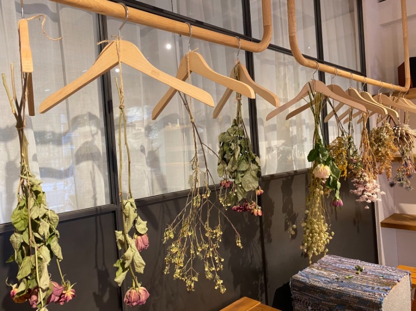
- 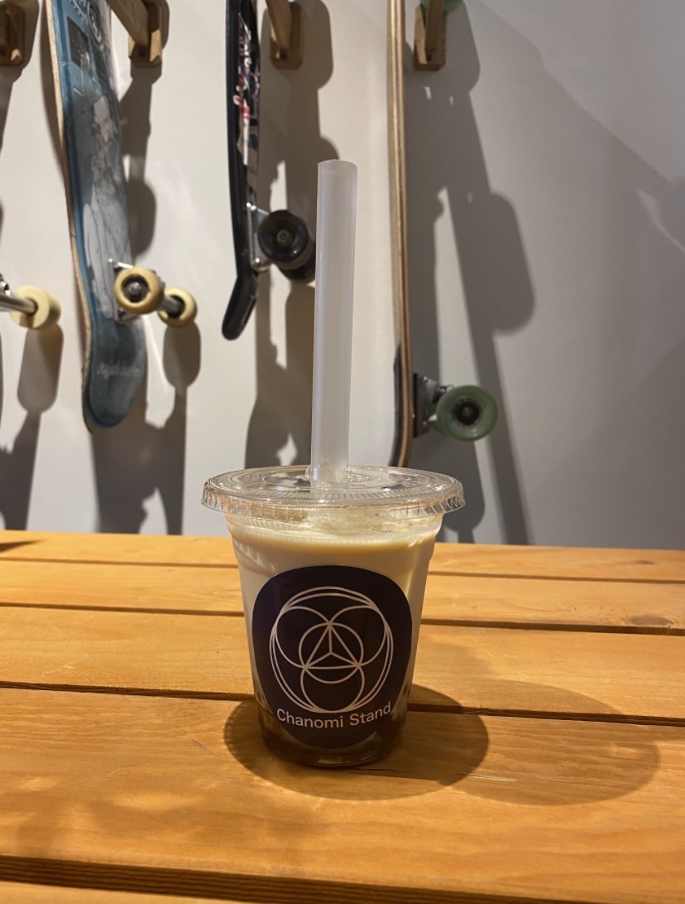
- 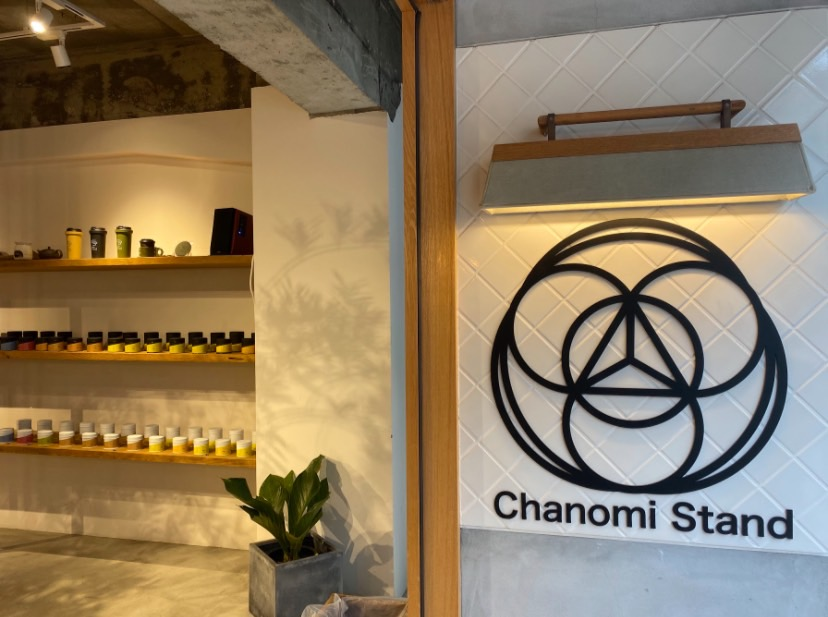
営業時間
11：00~20：00
Access
兵庫県神戸市中央区栄町通
１丁目１−９にて
090-1905-3996
日本茶を使ったドリンクがスタンド形式でいただけるお店です。
お洒落で新感覚の厳選した日本茶を体感できるとのこと。
店内では、産地直送の野菜販売も行っています
公式サイト
ゼロカロリー 元町
- 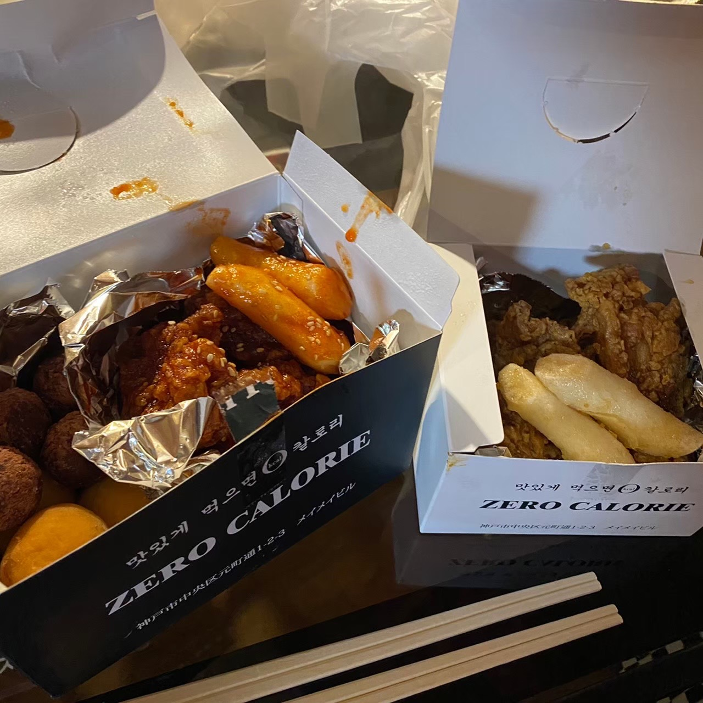
- 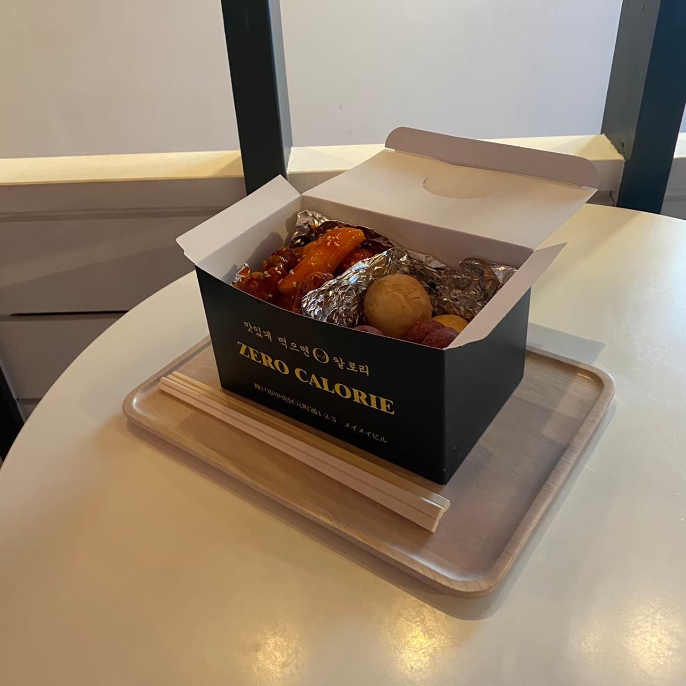
- 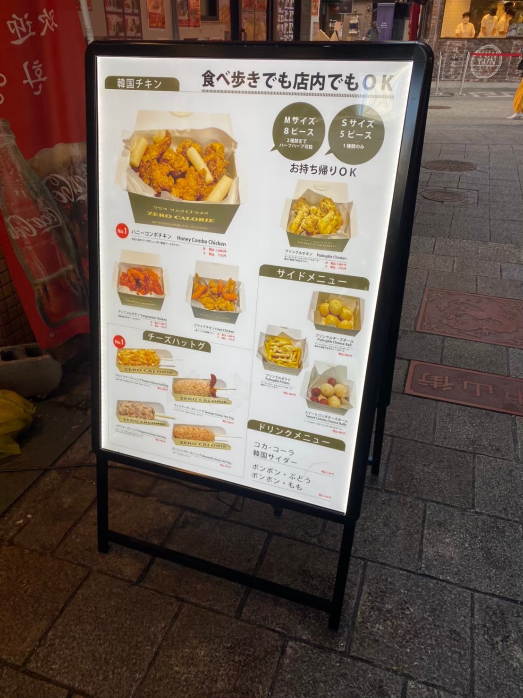
平日
12：00~19：30
土日祝
11：00~19：30
Access
兵庫県神戸市中央区元町通１丁目
２−３ メイメイビル 1F
080-4023-1633